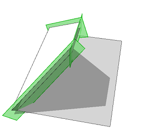
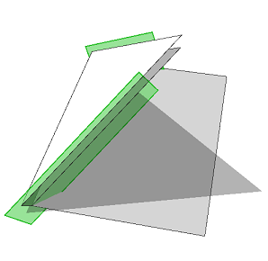

trim operation
The trim operation applies the current shape's trim planes to the geometry of the current shape.
Trim planes are generated by a component split and can be enabled and disabled by the trim attribute.
Trimming is automatically performed when a primitive or an asset is inserted in the scope.
Use the geometry.isInstanced function to check if an inserted asset was trimmed.
Related
Examples
Manual Trimming

Roof-->
roofHip(45)
comp(f) { 1 : Face }
Face-->
s('2,'2,0.5)
center(x)
extrude(0.5)
set(trim.horizontal, true)
trim()
A roof face is extruded and trimmed by both vertical and horizontal trim planes. The trim planes are generated by the component split. Setting trim.horizontal to true activates horizontal trimming.
Automatic Trimming

Face-->
s('2,'2,0.5)
center(x)
primitiveCube()
A cube is inserted in the scope of a roof face. The insert and primitive operations automatically trim the geometry. Horizontal trim planes are not enabled by default.